1. Start clean in aa26
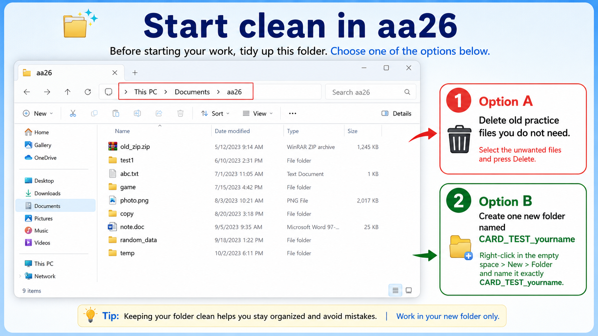
What to do
- Open Documents → aa26.
- Delete old files you do not need, or make one new folder named CARD_TEST_yourname.
- Work only inside your new task folder.
Explanation
This step makes your work easier to check. A clean folder helps you avoid mistakes.
2. Open your folder
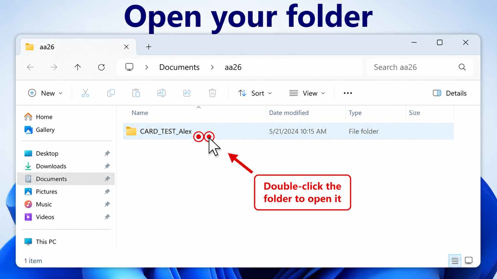
What to do
- Find your task folder in aa26.
- Double-click the folder to open it.
Explanation
Double-click means two quick left-clicks. You must open the correct folder before you start creating files.
3. Create a new folder
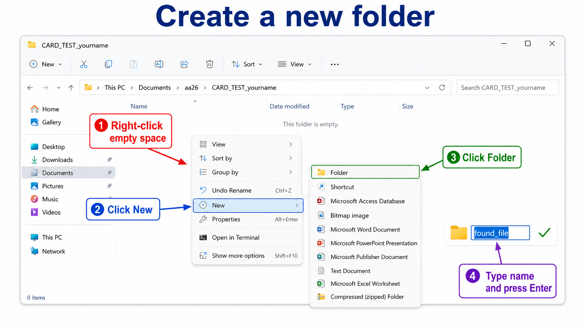
What to do
- Right-click empty space.
- Click New.
- Click Folder.
- Type the folder name.
- Press Enter.
Explanation
You will use folders to organize your files. The folder name must match the name on your task card.
4. Create all subfolders from your card
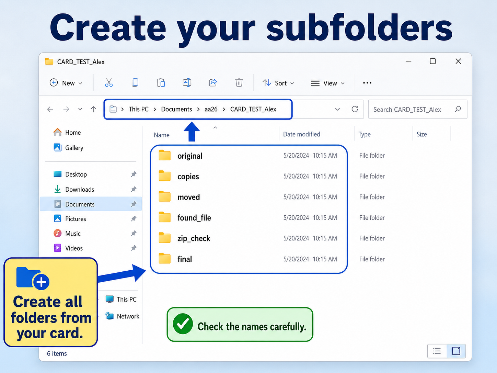
What to do
- Read the card carefully.
- Create every folder that the card asks for.
- Check all names again.
Explanation
Many students lose points because they forget one folder or write the wrong name. Make all folders first.
5. Create a text file
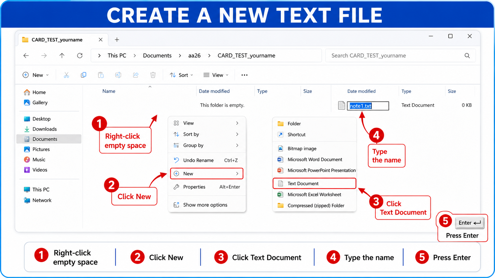
What to do
- Right-click empty space.
- Click New → Text Document.
- Type the file name and press Enter.
- Open the file and write a short sentence.
- Save the file.
Explanation
A text file is a simple file for notes. In your practical card, you may need to make several text files.
6. Rename a file in Windows 11
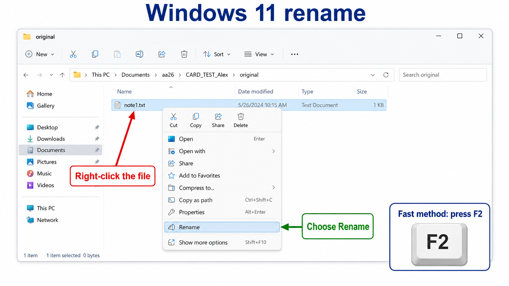
What to do
- Right-click the file.
- Click Rename.
- Type the new name.
- Press Enter.
- Fast method: select the file and press F2.
Explanation
Rename changes the file name. In Windows 11, the Rename button is in the right-click menu. This is an important Windows 11 skill.
7. Copy and move
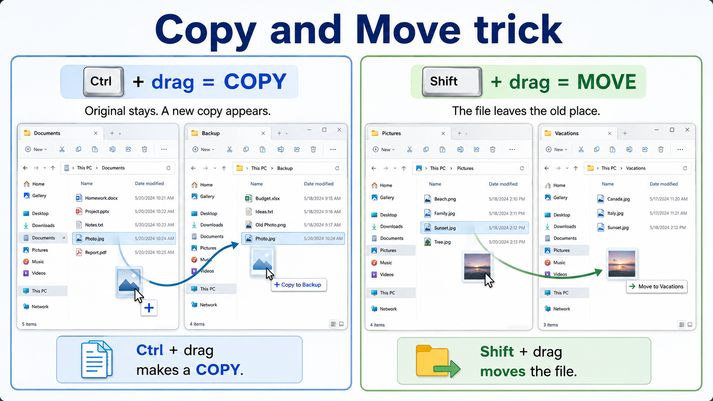
What to do
- Copy keeps the original and makes a new file.
- Move changes the place of the file.
- To be sure while dragging: hold Ctrl to COPY.
- To be sure while dragging: hold Shift to MOVE.
Explanation
This is the most important trick for weak students. Ctrl + drag is safer for copy. Shift + drag is safer for move.
8. Search for a file
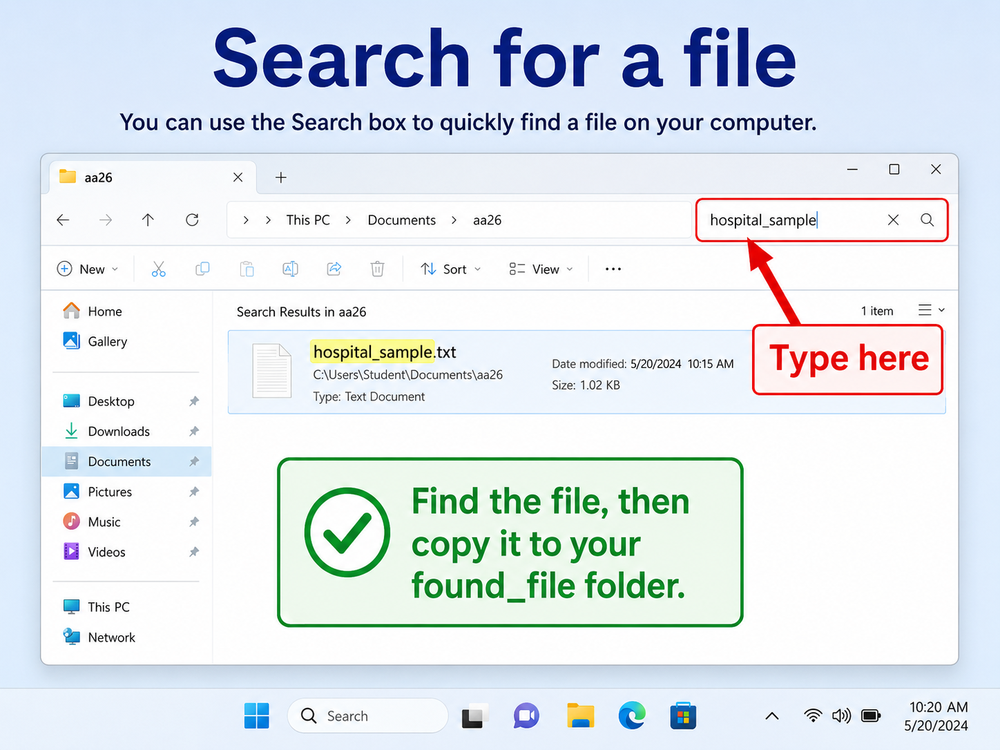
What to do
- Click the Search box in File Explorer.
- Type the file name you need.
- Wait for the result.
- Open or copy the file after you find it.
Explanation
Search helps you find a file when you do not remember its exact location.
9. Copy a file from aa26_source
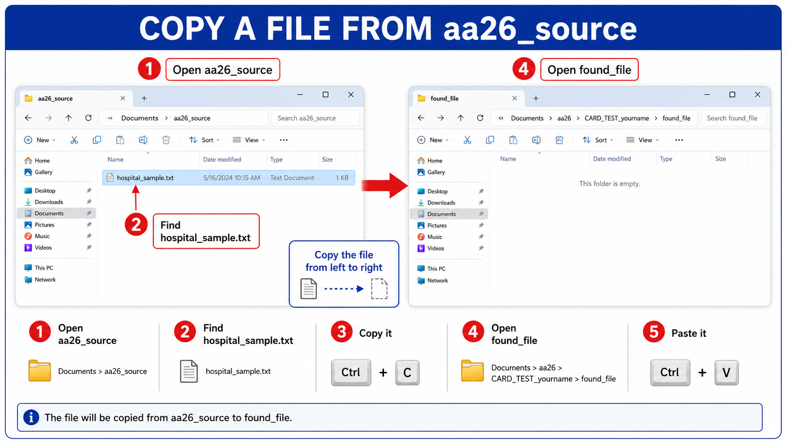
What to do
- Open aa26_source.
- Find the correct file.
- Copy it.
- Open your found_file folder.
- Paste it there.
Explanation
Your card may ask you to find one common file and put it in your own folder. This shows that you can find, copy, and paste.
10. Create a picture in Paint
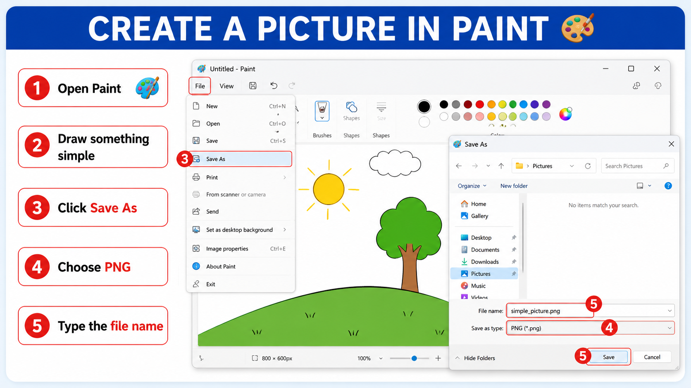
What to do
- Open Paint.
- Draw something simple.
- Click Save As.
- Choose PNG.
- Type the file name and save it.
Explanation
Paint is an easy way to create one picture file. Your task card may ask you to save a simple image in PNG format.
11. Open with
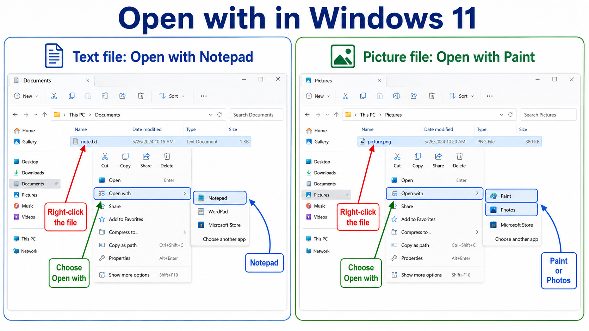
What to do
- Right-click the file.
- Click Open with.
- Choose the correct app.
- For a text file, choose Notepad.
- For a picture, choose Paint or Photos.
Explanation
Use Open with when Windows opens a file with the wrong app, or when you want a different app.
12. Check file properties
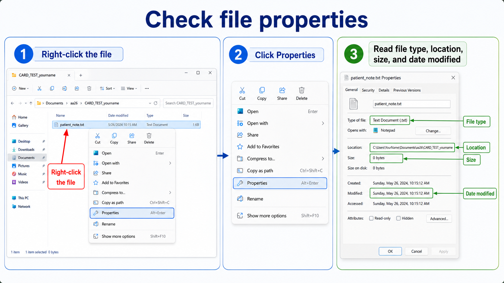
What to do
- Right-click the file.
- Click Properties.
- Read the type, location, size, and date modified.
Explanation
Properties help you check whether the file is correct and whether it is saved in the right folder.
13. Make a ZIP file
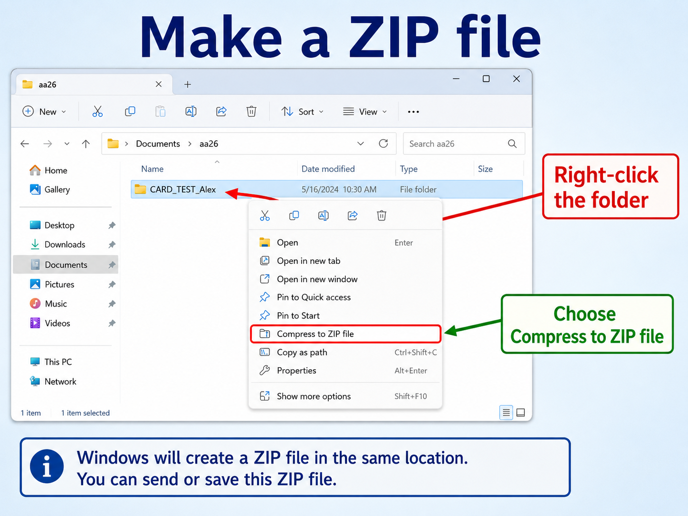
What to do
- Right-click the folder you need to pack.
- Click Compress to ZIP file.
- Wait for Windows to create the ZIP file.
Explanation
A ZIP file is a packed folder. ZIP is useful for sending files by e-mail or messenger, and for downloading from websites.
14. Extract the ZIP file
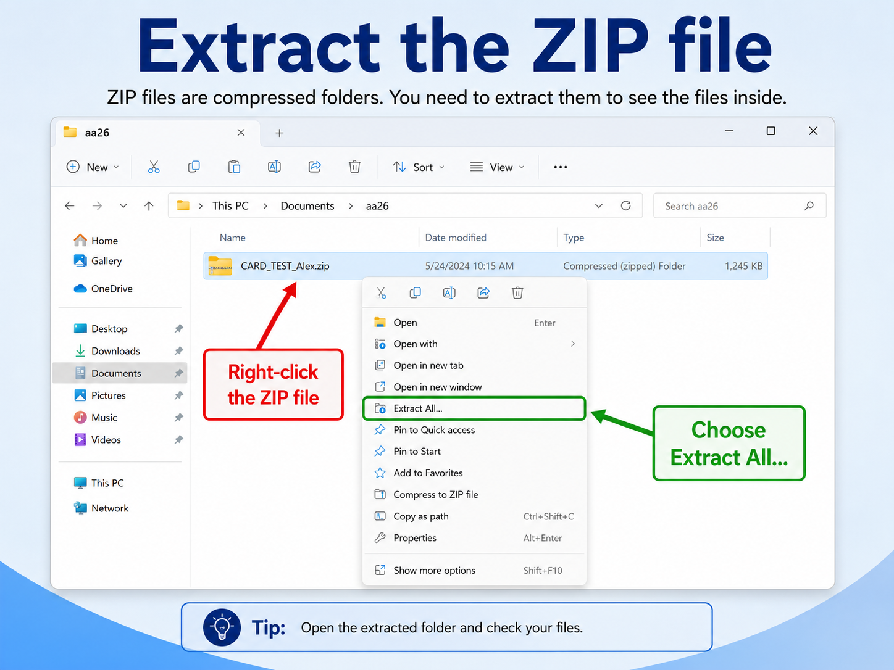
What to do
- Right-click the ZIP file.
- Click Extract All...
- Choose the place if needed.
- Open the extracted folder and check the files.
Explanation
To use the files inside a ZIP, you usually need to extract it first.
15. Create a shortcut (optional)
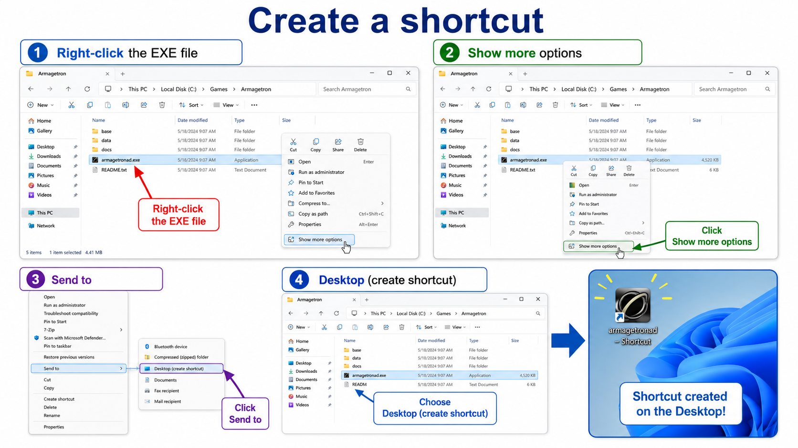
What to do
- Right-click the EXE file.
- Click Show more options.
- Click Send to.
- Click Desktop (create shortcut).
Explanation
A shortcut is a quick link. It is useful for programs or games. Stronger students can do this optional step.
16. Final check before you call the teacher
What to do
- Open your main task folder.
- Show all required subfolders.
- Show your text files and other files.
- Show the ZIP file.
- Show the extracted folder.
- Show the special file from the card.
Explanation
Before you call the teacher, check everything yourself. Clean, organized work is easier to grade.